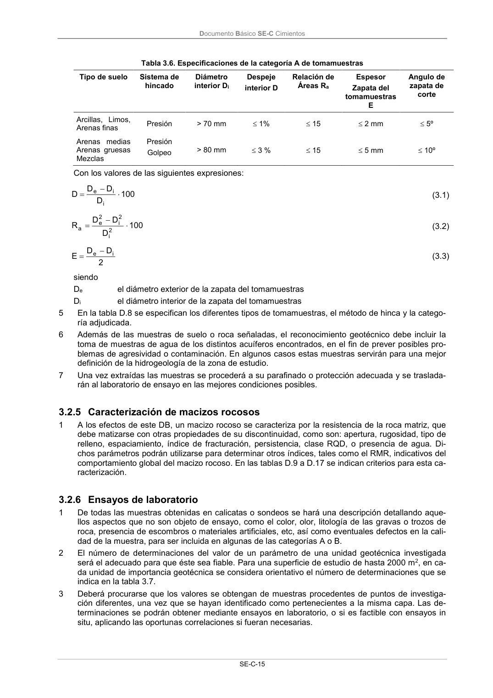

DB-SE-C · 3.2.5 Caracterización de macizos rocosos · versión 2019-12-20 · capa oficial
Formatos: JSON compacto · Markdown · PDF fuente
Ámbito del documento · texto del ámbito · documento y tablas
ID técnico a0044 · PDF pág. 20 · jerarquía no validada por persona · contrastado con el literal de la página 20 (candidato tipográfico); no validado por persona · padre: a0010
3.2.5 Caracterización de macizos rocosos 1 A los efectos de este DB, un macizo rocoso se caracteriza por la resistencia de la roca matriz, que debe matizarse con otras propiedades de su discontinuidad, como son: apertura, rugosidad, tipo de relleno, espaciamiento, índice de fracturación, persistencia, clase RQD, o presencia de agua. Di- chos parámetros podrán utilizarse para determinar otros índices, tales como el RMR, indicativos del comportamiento global del macizo rocoso. En las tablas D.9 a D.17 se indican criterios para esta ca- racterización.

PDF fuente redistribuible: copia fiel enlazada en esta página (SHA256 verificado).